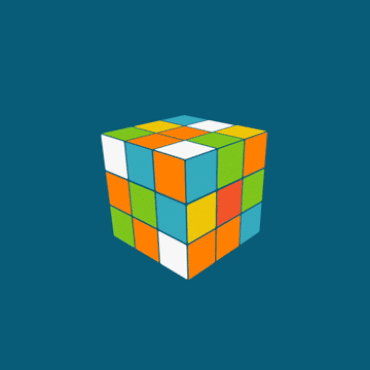

Программирование - моё либимое хобби. Лично для меня это очень интересный и увлекательный процесс, который требует усидчивости и внимательности. Это занятие подойдёт настойчивым и целеустремлённым людям. Очень часто на пути программиста возникают проблемы в виде ощибок или багов, и если человек бросает это дело, не исправив ощибку, этот вид деятельности ему не подходит.
Полезные ссылки на эту тему: Программирование-Википедия; Программирование-Викиучебник.Моя любимая головоломка - это кубик рубика. Мой личный рекорд по решению этой головоломки - 40 секунд. Так же я интересуюсь разнообразными вариациями кубика рубика. Моя коллекция насчитывает 7 разных вариаций этой головоломки и далеко не все из них выглядят как куб в разобранном виде. Это хобби может понравиться не любому человеку, так как, чтобы научиться собирать одну из таких головоломок, нужно потратить немало времени и усилий.
Полезные ссылки на эту тему: Головоломки-Википедия; Кубик Рубика-Википедия.
Шахматы, очень интересное увлечение, которое тренерует логическое мышление и умение думать наперёд. Это хобби не имеет границ, в нём можно совершенствоваться буквально до бесконечности. Игра в шахматы может понравиться любому человеку, ведь, чтобы научиться играть, понадобится совсем немного времени. А вот играть в шахматы на профессианальном уровне могут не все, ведь чтобы научиться играть в шахматы хотя бы на среднем уровне, человеку потребуется потрать очень много времени и усилий.
Полезные ссылки на эту тему: Шахматы-Википедия.